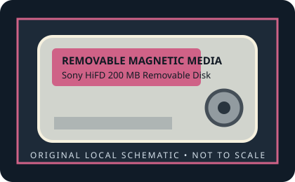

[ REMOVABLE MEDIA // MODEL-SPECIFIC RECORD ]
Sony HiFD 200 MB Removable Disk
Second-generation Sony HiFD relaunch, November 1999 (200 MB media). 200 MB nominal capacity; 3.5-inch-class HiFD disk (approximately 94 × 90 × 3.3 mm).

IDENTIFICATION: Verify the exact capacity, physical format, and generation printed on the medium. A cartridge has no host interface of its own; drive interface and system support must be checked against the exact reader model.
Format, capacity and compatibility
| Product / media model | Sony HiFD 200 MB Removable Disk |
|---|---|
| Generation / format | Second-generation Sony HiFD relaunch, November 1999 (200 MB media). |
| Capacity and medium | 200 MB nominal capacity; 3.5-inch-class HiFD disk (approximately 94 × 90 × 3.3 mm). |
| Media and drive interface | No electrical connector on the disk. Use a 200 MB HiFD-compatible mechanism and its documented host interface/driver; do not use the first-generation 150 MB drive as a substitute. |
| Compatibility | Requires a second-generation 200 MB HiFD drive. This 200 MB medium is explicitly not backward-compatible with the first-generation 150 MB HiFD media; standard 3.5-inch floppy support is a drive feature, not a property of this cartridge. Host interface and OS driver depend on the exact drive model. |
| Version and model caveat | The 200 MB relaunch was a distinct media generation. The 150 MB and 200 MB HiFD cartridges must not be treated as mutually readable. |
Handling and preservation
Keep the cartridge in its protective case, away from dust, moisture, heat, strong magnetic fields, and physical shock. Do not open a sealed cartridge or force it into a drive. For preservation, image read-only with a known-compatible mechanism, retain the source media, record the drive/interface used, and verify copied data with checksums.
- Photograph the label and shell before use; preserve packaging, write-protect state, and acquisition notes.
- Keep at least two independent verified copies of important data. A legacy removable cartridge by itself is not an archival strategy.
Model and generation notes
The 200 MB relaunch was a distinct media generation. The 150 MB and 200 MB HiFD cartridges must not be treated as mutually readable.
Storage capacity names and drive interface names describe different things: confirm the cartridge format/generation first, then check the exact reader model, host connector, controller, operating-system driver, and filesystem separately.
Sources and standards
- Museum of Obsolete Media — Sony HiFDDocuments the November 1999 200 MB relaunch and states that it could not read/write the earlier 150 MB disks.
- The Essential Guide to Computer Data Storage, p. 117 (Google Books)Published technical context for HiFD capacity and generation history.
- Internet Archive — Sony HiFD 200 MB documentation searchSearches archival manuals for the relaunch drive generation and compatibility details.
Discontinued-media specifications are cross-checked against period product material and museum/archive documentation. Family-level history does not replace the exact drive manual for interchangeability.